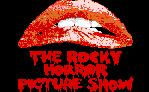

| Platforms: | Operating Systems: | Programming Environments: |
|---|---|---|
| Apple II series | ProDOS | Applesoft BASIC |
| Commodore 64/128 | MS-DOS 3.3-6.22 | Microsoft BASIC 2.0 |
| Macintosh | Finder/Multifinder | GW-BASIC |
| IBM Compatibles | Windows 3.x | Q/QuickBASIC |
| Windows 95 | Turbo C/C++ | |
| UNIX/Linux | HTML | |
| Logo !!! |
Let's face it: you can't waste your whole life away staring at a computer screen! If you did your eyes would dry up, your hair would fall out, and you'd be left looking like some utterly putrid mutant being like the Toxic Avenger or Ross Perot.
Every Satuday night I drive out to the Mundelein Cinema to see The Rocky Horror Picture Show. You see, I'm a big fan of cult movies. My favorite cu lt movies are Rocky Horror, Tank Girl, The Blues Brothers, Heavy Metal, The Kentucky Fried Movie, and Monty Python and the Holy Grail. I don't watch much TV, but I do try to catch episodes of The New Red Green Show, Are You Being Served?, Absolutely Fabulous, and Mystery Science Theater 3000.
The one thing that probably sets me apart most from other Computer Science majors (sorry guys!) is my love of the arts. I'm an actor, author, poet, and artist. Some of my earlier poe ms, as well as a CD review, have appeared in the electronic 'zine Ambient Interactive.
I've always been considered a bit
"eccentric." It's just the way I am. I love to read everything from
the Hitchhiker's Guide to the Galaxy series to A Brief History of Time by Stephen Hawking. I also have a collection of old videogames and computer equipment, including a Fairchild Channel F in excellent condition and a Commodore 64.
My
musical tastes are heavily influenced by my technical background. I'm a
big fan of industrial music, as well as techno and EBM (Electronic Body
Music). The CDs that seem to get played the most in my collection are
by My Life with the
Thrill Kill Kult, KMFDM, Information Society, and Man or Astroman?
 Back to Lab Assistant Page
Back to Lab Assistant PageDave's Home Page v1.0 - Last Updated 2/15/96
URL: http://tofu.rhcl.niu.edu/help/help/ross.html